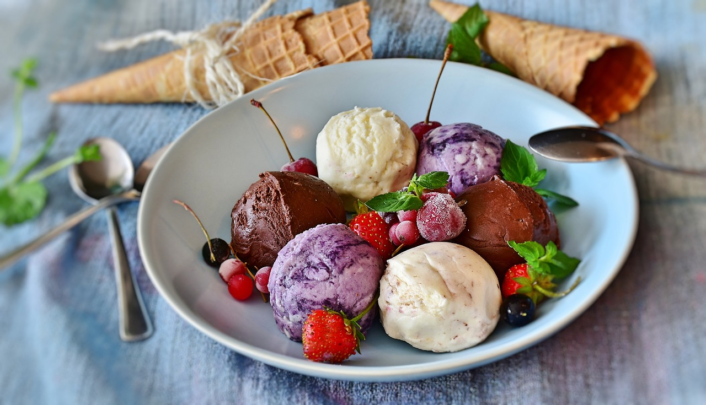

Lente
Kers & Munt
Zoete kersen, verse munt, een vleugje vanille
Van romig gelato tot knapperige wafels en flinterdunne crêpes — al meer dan 25 jaar dé verwenplek in hartje Tilburg.
Al meer dan 25 jaar vers bereid op de Oude Markt in Tilburg

Raffy Gelato opende in 1997 met één droom: authentiek Italiaans en Grieks gelato naar het hart van Tilburg brengen. Stap voor stap, bolletje voor bolletje, groeide onze winkel uit tot dé geliefde verwenplek van Tilburg.
Op de Oude Markt vind je ons elke dag klaar met verse smaken, knapperige wafels en flinterdunne crêpes. Of je even pauzeert tijdens het shoppen of gezellig neerstrijkt met vrienden — bij Raffy ben je altijd welkom.
Lees ons verhaalGeen kunstmatige smaakstoffen of kleurstoffen. Elk ingrediënt heeft een naam en een verhaal.
Elke ochtend bereiden we verse smaken. Als het op is, maken we morgen opnieuw. Geen compromis.
Al meer dan 25 jaar maken we gelato op de authentieke Italiaanse manier — langzaam, met liefde en vakmanschap.
Ons seizoensmenu wisselt mee met de natuur. Als het op is, wacht je tot het volgende seizoen.
Zoete kersen, verse munt, een vleugje vanille
Bramen, aalbessen, bosbessen en een wafelmand
Mango, passievrucht, lavendel en pistache
Verse aardbeien, kersen, lichte room
IJskoude watermeloen, limoen, verse munt
Romige pompoen, warme kruiden, karamel
Gekruide speculaas, sappige peer, slagroom
Provençaalse lavendel, wildebloemen honing
"Het chocolade-hazelnoot gelato is een openbaring. Al meer dan tien jaar kom ik hier — en ik spijt me er geen moment van."
"Wij bestellen elk zomer het gelato voor ons tuinfeest. Alle gasten vragen waar het vandaan komt. Raffy is de enige optie."
"Mijn kinderen willen nu nergens anders meer ijs. Dat is enerzijds een compliment, anderzijds een probleem. Bedankt, Raffy!"